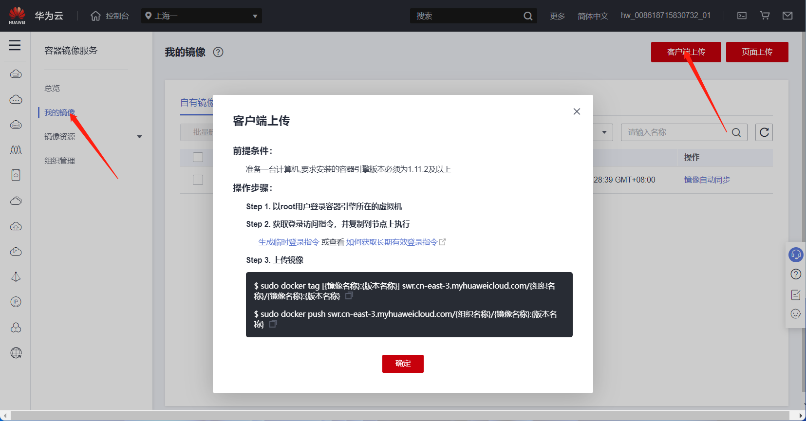

Docker in Docker
前言
Docker in Docker，简称 dind，是一种在 docker 容器里面运行 docker 的方法，docker 官方镜像里面自己是有支持的，只不过 docker 现在的镜像是基于 Alpine Linux 的，我不太习惯，所以自己基于 ubuntu 20.04 做了一个 dind 镜像
重要
dind 方式运行容器的时候一定要加参数 --privileged，不然后台 docker 服务起不来
制作流程
运行 ubuntu:20.04 容器
docker pull ubuntu:20.04
docker run -itd --name ubuntu ubuntu:20.04 bash
docker exec -it ubuntu bash
容器内安装软件和配置
apt update
apt install docker.io systemd -y
# 安装完后确认一下是否已经安装 systemd，并确保/sbin/init为systemd的软链接
# ubuntu的docker.io只能通过systemd启动
修改配置
因为第一层容器已经需要运行在 docker 下了，它的文件系统一般是不支持继续运行 docker 的
使用 fuse-overlayfs
fuse-overlayfs 支持所有的 backing filesystem
安装 fuse-overlayfs
apt install fuse-overlayfs
修改配置文件
/etc/docker/daemon.json 文件内容
{
"storage-driver": "fuse-overlayfs"
}
使用 VFS
VFS 也支持所有的 backing filesystem，但是 VFS 文件系统是一层一层全量叠上去，很浪费空间
/etc/docker/daemon.json 文件内容
{
"storage-driver": "vfs"
}
使用匿名卷
在 Dockerfile 中加入以下
VOLUME ["/var/lib/docker"]
commit
docker commit ubuntu ubuntu-20.04-dind:0.0.0
build
Dockerfile
FROM ubuntu-20.04-dind:0.0.0
WORKDIR /root
# 启动systemd，这个是systemd的软链接
ENTRYPOINT ["/sbin/init"]
build
docker build -t ubuntu-20.04-dind:0.0.1
上传到服务器
这里以华为云为例，点击生成临时登录指令，在终端运行

docker tag ubuntu-20.04-dind:0.0.1 swr.cn-east-3.myhuaweicloud.com/zcteo/ubuntu-20.04-dind:0.0.1
docker push swr.cn-east-3.myhuaweicloud.com/zcteo/ubuntu-20.04-dind:0.0.1
下载地址
目前是 VFS 形式的
阿里云
docker pull registry.cn-chengdu.aliyuncs.com/zcteo/ubuntu-20.04-dind
华为云
docker pull swr.cn-east-3.myhuaweicloud.com/zcteo/ubuntu-20.04-dind
由于个人水平有限，文中若有不合理或不正确的地方欢迎指出改正